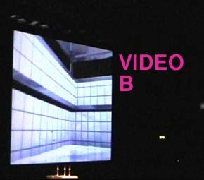
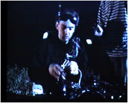

| technology |
| home page |
|  | . We keep our members informed on legislative and regulatory changes which may affect their businesses. We provide testimony at legislative, Congressional, and regulatory hearings on issues which affect the computer software industry. CSIA was formed in the early 1980's when California's State Board of Equalization auditors decided that custom programming was a product subject to sales tax and started issuing retroactive tax assessments. It took state clarifying legislation to convince them that programming was a service, not a product. |
|  | com See all Top Sellers in Operating Systems 4 Microsoft Plus. net See all Top Sellers in Computer Gaming 5 Symantec Norton Antivirus 2002 (PC) See it at Chumbo. Featured Departments 2001 Circle of Excellence Anti-Virus Software Desktop Publishing software Lower Your Web Access Bills. PC Games PDA Software Spreadsheet Software Video Conferencing software Best Selling PDAs From PalmShop for a brand new Palm to manage, share and secure all the information you use every day. Subscribe to BizRate's Free shopping newsletter and get a FREE Blackberry WirelessHandheld. |